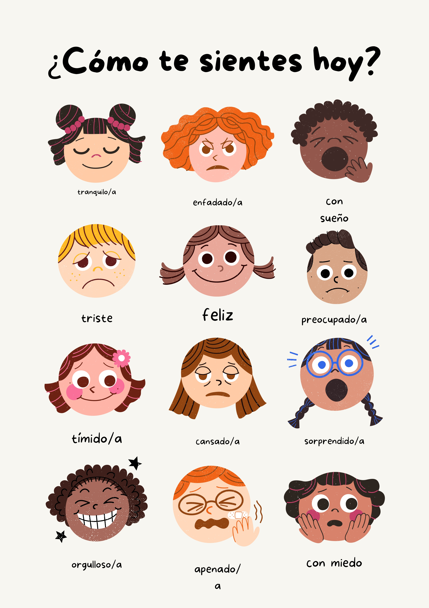
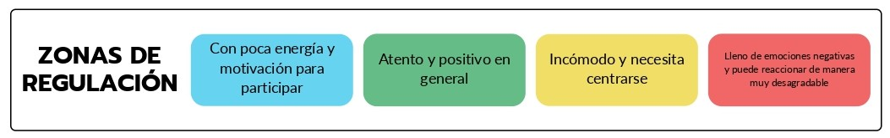

{% extends "base.html" %}
{% block background %}<body class="background_6">{% endblock %}
{% block logo-color %}<h1 class="title_dark p-2">Emotions on Page</h1>{% endblock %}
{% load bootstrap_icons %}
{% block title %}<title>Emociones</title>{% endblock %}
{% block content %}

<div class="container">
    <div class="row text_4  p-4 m-2 borde">
      <div class="row text-center justify-content-center align-item-center" style="padding: 5px 15px 200px;">
        <h1 class="col-12 display-5 m-3">Cartel de Emociones</h1>
        

        <h1 class="col-12 display-5 m-3">Nuestras emociones se pueden dividir en cuatro zonas: Azul, Verde, Amarillo y Rojo.
          Siempre intentamos permanecer o volver a la zona verde y evitar la zona roja. 
        </h1>
        
      </div>

    </div>
</div>
<div class="container">
  <div class="row text_4  p-4 m-2 borde">
    <div class="row text-center justify-content-center align-item-center" style="padding: 5px 15px 200px;">
      <button type="button" class="btn btn-success m-2" style="width:60px;height:60px;">Registrar Emociones</button>
    </div>
  </div>
</div>


{% endblock %}
